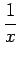

Inhalt Index DeskTop Bronstein
Unendliche Reihen Funktionenreihen
Zur Funktionswertberechnung können auch divergente Reihen nützlich sein. Im folgenden werden asymptotische Potenzreihen bezüglich  zur Berechnung von Funktionswerten für große Werte von |x| betrachtet.